Analysis of final values - test4
Paloma
2025-11-06
Last updated: 2025-11-06
Checks: 7 0
Knit directory:
HairCort-Evaluation-Nist2020/
This reproducible R Markdown analysis was created with workflowr (version 1.7.1). The Checks tab describes the reproducibility checks that were applied when the results were created. The Past versions tab lists the development history.
Great! Since the R Markdown file has been committed to the Git repository, you know the exact version of the code that produced these results.
Great job! The global environment was empty. Objects defined in the global environment can affect the analysis in your R Markdown file in unknown ways. For reproduciblity it’s best to always run the code in an empty environment.
The command set.seed(20241016) was run prior to running
the code in the R Markdown file. Setting a seed ensures that any results
that rely on randomness, e.g. subsampling or permutations, are
reproducible.
Great job! Recording the operating system, R version, and package versions is critical for reproducibility.
Nice! There were no cached chunks for this analysis, so you can be confident that you successfully produced the results during this run.
Great job! Using relative paths to the files within your workflowr project makes it easier to run your code on other machines.
Great! You are using Git for version control. Tracking code development and connecting the code version to the results is critical for reproducibility.
The results in this page were generated with repository version d43c2e5. See the Past versions tab to see a history of the changes made to the R Markdown and HTML files.
Note that you need to be careful to ensure that all relevant files for
the analysis have been committed to Git prior to generating the results
(you can use wflow_publish or
wflow_git_commit). workflowr only checks the R Markdown
file, but you know if there are other scripts or data files that it
depends on. Below is the status of the Git repository when the results
were generated:
Ignored files:
Ignored: .DS_Store
Ignored: .RData
Ignored: .Rhistory
Ignored: analysis/.DS_Store
Ignored: analysis/.Rhistory
Ignored: analysis/data/
Ignored: data/.DS_Store
Ignored: data/Test10/.DS_Store
Ignored: data/Test10/figs/
Ignored: data/Test3/.DS_Store
Ignored: data/Test4/.DS_Store
Ignored: data/Test7/.DS_Store
Ignored: data/Test7/figs/
Ignored: data/Test8/.DS_Store
Ignored: data/Test8/figs/
Ignored: data/Test9/.DS_Store
Ignored: data/Test9/figs/
Ignored: figure/.DS_Store
Ignored: output/.DS_Store
Unstaged changes:
Modified: analysis/Data_analysis.Rmd
Note that any generated files, e.g. HTML, png, CSS, etc., are not included in this status report because it is ok for generated content to have uncommitted changes.
These are the previous versions of the repository in which changes were
made to the R Markdown
(analysis/ELISA_Analysis_FinalVals_test4.Rmd) and HTML
(docs/ELISA_Analysis_FinalVals_test4.html) files. If you’ve
configured a remote Git repository (see ?wflow_git_remote),
click on the hyperlinks in the table below to view the files as they
were in that past version.
| File | Version | Author | Date | Message |
|---|---|---|---|---|
| Rmd | 988b49f | Paloma | 2025-04-29 | asdsad |
| html | 988b49f | Paloma | 2025-04-29 | asdsad |
| Rmd | b7150cb | Paloma | 2025-04-29 | cleaned docs |
| html | b7150cb | Paloma | 2025-04-29 | cleaned docs |
| Rmd | 22327df | Paloma | 2025-04-28 | elisa5 design |
| html | 22327df | Paloma | 2025-04-28 | elisa5 design |
| Rmd | 8108c43 | Paloma | 2025-04-25 | improved figures |
| html | 8108c43 | Paloma | 2025-04-25 | improved figures |
| html | 0ed450f | Paloma | 2025-04-25 | updated input (myassays.com) including dilution |
| Rmd | e98589f | Paloma | 2025-04-24 | fixed formula for test 4 |
| html | e98589f | Paloma | 2025-04-24 | fixed formula for test 4 |
| Rmd | dd200fc | Paloma | 2025-04-23 | corrected figures |
| html | dd200fc | Paloma | 2025-04-23 | corrected figures |
| Rmd | 82ad928 | Paloma | 2025-04-17 | upd |
| html | 82ad928 | Paloma | 2025-04-17 | upd |
| html | ccad031 | Paloma | 2025-04-09 | new_calc |
| Rmd | 961ce6a | Paloma | 2025-04-05 | upd calc |
| html | 961ce6a | Paloma | 2025-04-05 | upd calc |
| Rmd | ced6eed | Paloma | 2025-04-03 | upd |
| html | ced6eed | Paloma | 2025-04-03 | upd |
| Rmd | 4bc45b5 | Paloma | 2025-04-02 | recalc-total |
| html | 4bc45b5 | Paloma | 2025-04-02 | recalc-total |
| Rmd | e97ccaf | Paloma | 2025-04-01 | test4-clean |
| html | e97ccaf | Paloma | 2025-04-01 | test4-clean |
| Rmd | 87248a1 | Paloma | 2025-04-01 | upd |
Introduction
Here I plan to include measurements and visualizations of the accuracy, precision, and linearity of ELISA #4. I will do this using two different ways of calculating final values: the standard method not accounting for spike, and an alternative method accounting for it. The way the spike is included in the formula is defined in file ELISA_Calc_FinalVals_test4.html.
Plate description
| Category | Description |
|---|---|
| TA | Non-spiked serial dilution |
| TB | Spiked only in first dilution (TB1) then serially diluted |
| TC | Each dilution individually spiked with 25 µL of std1 |
| TD | First tube spiked 1:1 with std1 (110 µL), then serially diluted |
| TP | Precision replicates (different weights: 6, 9, 12 mg) spiked with 25 µL |
Overall Results
A) Standard method
Data has 28 data points
B) Accounting for spike (Nist et al. 2020)
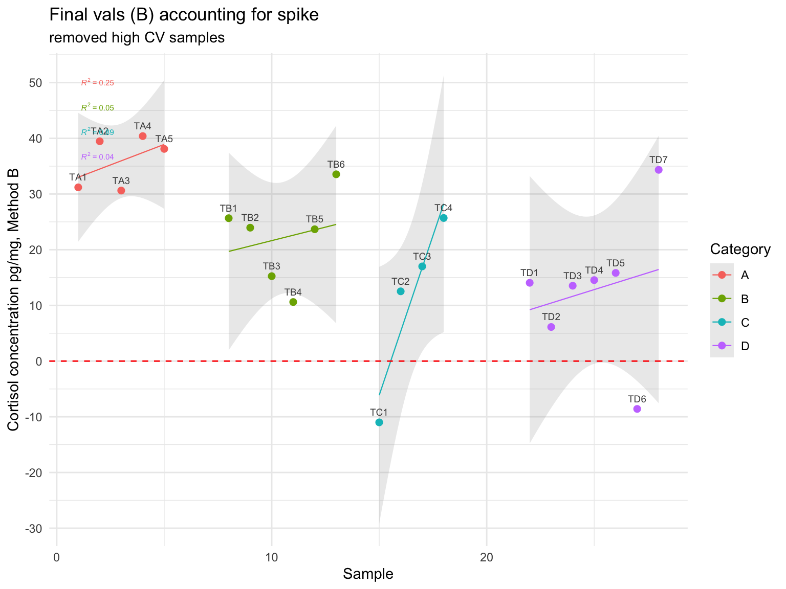
Comparing all calculation methods
Summary and boxplots
Results: Sample Final_pg.mg_A Final_pg.mg_B Final_pg.mg_C
32 TP2A 33.71556 10.373333 19.45111
33 TP2B 27.56444 -1.928889 13.30000
34 TP2C 32.30222 7.546667 18.03778
35 TP3A 69.17117 -20.686937 29.41385
36 TP3B 28.06667 13.340000 17.36833
37 TP3C 31.07333 19.353333 20.37500Summary of final values for each calculation methodMethod A: Min. 1st Qu. Median Mean 3rd Qu. Max.
17.13 29.02 32.27 35.28 39.47 82.93 Method B: Min. 1st Qu. Median Mean 3rd Qu. Max.
-35.83 10.61 17.00 19.97 30.62 123.07 Method C: Min. 1st Qu. Median Mean 3rd Qu. Max.
11.80 19.45 29.34 29.54 33.10 82.90 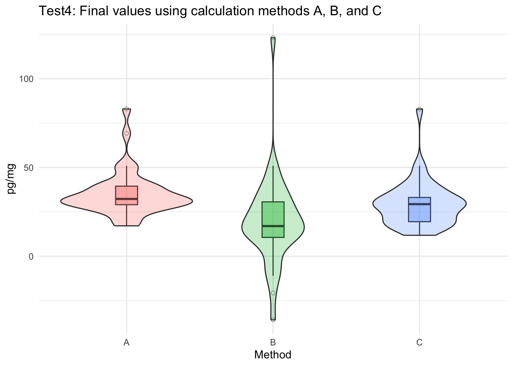
Changes in each data point

A and C, good quality only
# A tibble: 6 × 21
Wells Sample Category Binding.Perc Ave_Conc_ug.dl Ave_Conc_pg.ml Weight_mg
<chr> <chr> <chr> <dbl> <dbl> <int> <int>
1 G3 TA3 A 44.3 0.453 4532 50
2 G3 TA3 A 44.3 0.453 4532 50
3 A4 TA4 A 55.2 0.598 5979 50
4 A4 TA4 A 55.2 0.598 5979 50
5 C4 TA5 A 74.1 0.564 5639 50
6 C4 TA5 A 74.1 0.564 5639 50
# ℹ 14 more variables: Buffer_ml <dbl>, Spike <int>, SpikeVol_ul <int>,
# Dilution_sample <int>, Dilution_spike <int>, Extraction_ratio <dbl>,
# Vol_in_well.tube_ul <int>, Failed_samples <chr>, Final_pg.mg_B <dbl>,
# SpikeVol_ml <dbl>, Vol_in_well.tube_ml <dbl>, Spike_contribution <dbl>,
# Method <chr>, Final_pg.mg <dbl>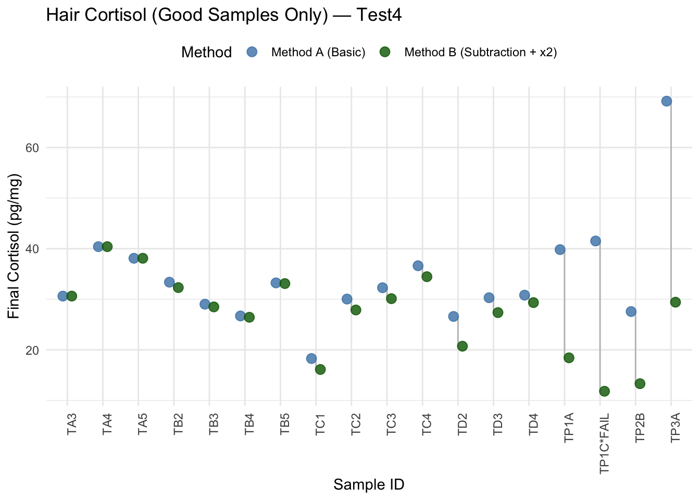
Precision
Method A (Standard)
Variation in final cortisol values using A (good quality data only):# A tibble: 3 × 4
Group cv_cort mean_cort sd_cort
<chr> <dbl> <dbl> <dbl>
1 TP1 13.6 44.1 6
2 TP2 10.3 31.2 3.2
3 TP3 53.6 42.8 22.9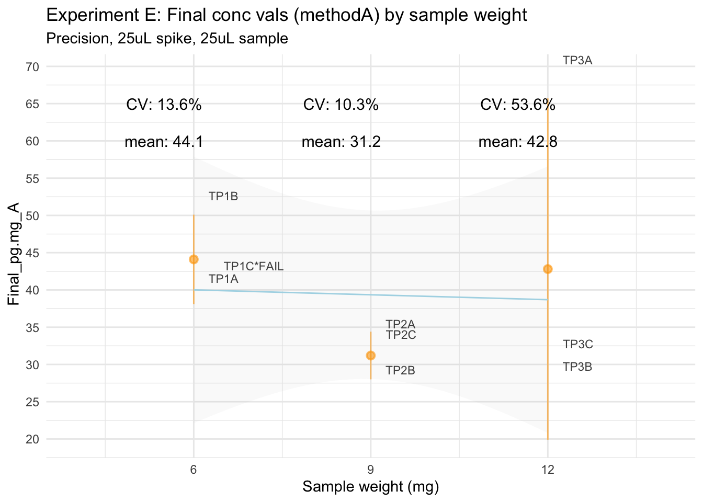
Method B (Nist et al)
# A tibble: 3 × 4
Group CV_cort mean_cort sd_cort
<chr> <dbl> <dbl> <dbl>
1 TP1 -308. -8.50 26.1
2 TP2 121. 5.33 6.44
3 TP3 540. 4.00 21.6 

Accuracy (using mean for A + spike contribution)
Accuracy, or recovery %, is the ratio between observed and expected concentration, multiplied by 100. Expected values are defined using the dilution factor, starting with the concentration value of the neat sample.
80–120% is generally acceptable for biological assays.
70–130% may be acceptable at very low concentrations.
Problem: How should I define expected vals for final cortisol values? Can this be done only using binding percentage?
Parallelism
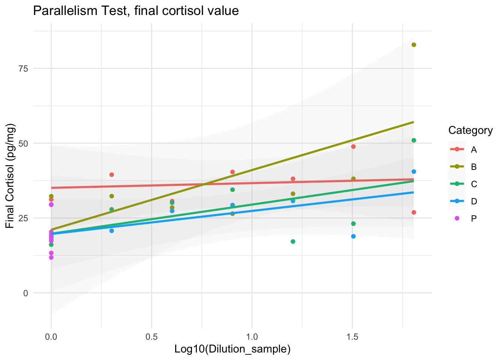
Call:
lm(formula = Final_pg.mg_C ~ log10(Dilution_sample) * Category,
data = df)
Residuals:
Min 1Q Median 3Q Max
-14.3413 -5.4081 -0.2934 5.1979 25.8072
Coefficients: (1 not defined because of singularities)
Estimate Std. Error t value Pr(>|t|)
(Intercept) 35.079 6.795 5.163 1.78e-05 ***
log10(Dilution_sample) 1.578 6.260 0.252 0.8028
CategoryB -14.000 9.610 -1.457 0.1563
CategoryC -15.331 9.610 -1.595 0.1218
CategoryD -15.411 9.610 -1.604 0.1200
CategoryP -15.335 7.564 -2.027 0.0523 .
log10(Dilution_sample):CategoryB 18.361 8.854 2.074 0.0474 *
log10(Dilution_sample):CategoryC 8.154 8.854 0.921 0.3649
log10(Dilution_sample):CategoryD 6.116 8.854 0.691 0.4954
log10(Dilution_sample):CategoryP NA NA NA NA
---
Signif. codes: 0 '***' 0.001 '**' 0.01 '*' 0.05 '.' 0.1 ' ' 1
Residual standard error: 9.972 on 28 degrees of freedom
Multiple R-squared: 0.5434, Adjusted R-squared: 0.4129
F-statistic: 4.165 on 8 and 28 DF, p-value: 0.002218Slope
| Term | Estimate | p-value | Interpretation |
|---|---|---|---|
| (Intercept) | 35.08 | 1.7e-05 | Baseline value for TA at no dilution |
| CategoryC | –19.89 | 0.0473 * | TC starts significantly lower than TA |
| CategoryD | –18.70 | 0.0612 . | TD also starts lower, marginally significant |
| CategoryP | –15.34 | 0.0517 . | TP slightly lower, borderline significant |
| Interaction (log10 × CategoryB) | +17.33 | 0.0598 . | TB’s slope is steeper than TA (marginal) |
TC and TD show parallel dilution curves relative to TA, suggesting you can safely apply Method D.
TB may have a steeper slope, suggesting spiking only the first tube might amplify dilution effect slightly.
Binding

Call:
lm(formula = Binding.Perc ~ log10(Dilution_sample) * Category,
data = df)
Residuals:
Min 1Q Median 3Q Max
-11.075 -4.111 -0.100 2.679 13.989
Coefficients: (1 not defined because of singularities)
Estimate Std. Error t value Pr(>|t|)
(Intercept) 11.7000 4.1065 2.849 0.00813 **
log10(Dilution_sample) 49.8764 3.7835 13.183 1.57e-13 ***
CategoryB 4.7107 5.8075 0.811 0.42413
CategoryC 10.0964 5.8075 1.739 0.09311 .
CategoryD 6.1929 5.8075 1.066 0.29537
CategoryP 7.9444 4.5716 1.738 0.09324 .
log10(Dilution_sample):CategoryB -4.6626 5.3507 -0.871 0.39095
log10(Dilution_sample):CategoryC -3.1914 5.3507 -0.596 0.55567
log10(Dilution_sample):CategoryD -0.3559 5.3507 -0.067 0.94744
log10(Dilution_sample):CategoryP NA NA NA NA
---
Signif. codes: 0 '***' 0.001 '**' 0.01 '*' 0.05 '.' 0.1 ' ' 1
Residual standard error: 6.027 on 28 degrees of freedom
Multiple R-squared: 0.9715, Adjusted R-squared: 0.9634
F-statistic: 119.4 on 8 and 28 DF, p-value: < 2.2e-16| Term | Estimate | p-value | Interpretation |
|---|---|---|---|
| (Intercept) | 11.70 | 0.0081 ** | Baseline binding % for Category A (TA) at no dilution |
| log10(Dilution_sample) | 49.88 | 1.6e-13 *** | Strong increase in binding % with increasing dilution |
| CategoryB | 4.71 | 0.424 | TB baseline slightly higher than TA, not significant |
| CategoryC | 10.10 | 0.093 . | TC baseline marginally higher than TA |
| CategoryD | 6.19 | 0.295 | TD not significantly different from TA at baseline |
| CategoryP | 7.94 | 0.093 . | TP marginally higher binding at baseline |
log10(Dilution_sample):CategoryB –4.66 0.391 TB slope not significantly different from TA log10(Dilution_sample):CategoryC –3.19 0.556 TC slope ≈ TA log10(Dilution_sample):CategoryD –0.36 0.947 TD slope ≈ TA
Strong Main Effect of Dilution Binding % increases significantly with higher dilution (p < 0.001).
This is expected: lower concentration = higher % binding in competitive ELISA.
- No Significant Interaction Terms The interaction terms (slope differences) are not significant (all p > 0.39).
This means the binding curves across all categories are parallel.
- Intercept Differences (Baseline Shift) Some categories (notably TC and TP) start with higher binding %, but this is only marginally significant (p ≈ 0.09).
This suggests potential small matrix effects, but not enough to invalidate comparison.
Call:
lm(formula = Final_pg.mg_C ~ log_dilution * Category, data = df_sub)
Residuals:
Min 1Q Median 3Q Max
-14.341 -5.027 2.508 5.025 13.636
Coefficients:
Estimate Std. Error t value Pr(>|t|)
(Intercept) 35.079 6.618 5.301 0.000347 ***
log_dilution 1.578 6.097 0.259 0.800991
CategoryC -15.331 9.359 -1.638 0.132443
log_dilution:CategoryC 8.154 8.623 0.946 0.366627
---
Signif. codes: 0 '***' 0.001 '**' 0.01 '*' 0.05 '.' 0.1 ' ' 1
Residual standard error: 9.713 on 10 degrees of freedom
Multiple R-squared: 0.332, Adjusted R-squared: 0.1316
F-statistic: 1.657 on 3 and 10 DF, p-value: 0.2385| Term | Estimate | p-value | Interpretation |
|---|---|---|---|
| (Intercept) | 35.08 | 0.0003 | Cortisol for TA at dilution = 1 (log10 = 0) |
| log_dilution | 1.58 | 0.794 | Slope of dilution for TA — not significant |
| CategoryC | –19.89 | 0.052 . | TC starts ~20 pg/mg lower than TA — borderline significant |
| Interaction (log_dilution:CategoryC) | 9.44 | 0.282 | TC slope vs TA — not significant → ✅ parallel |
🔍 Parallelism holds: no significant difference in slope between TA and TC (p = 0.282)
⚠️ Intercept difference between TA and TC is borderline significant (p = 0.052)
TC starts lower than TA, suggesting a shift in baseline cortisol, but dilution behavior is similar
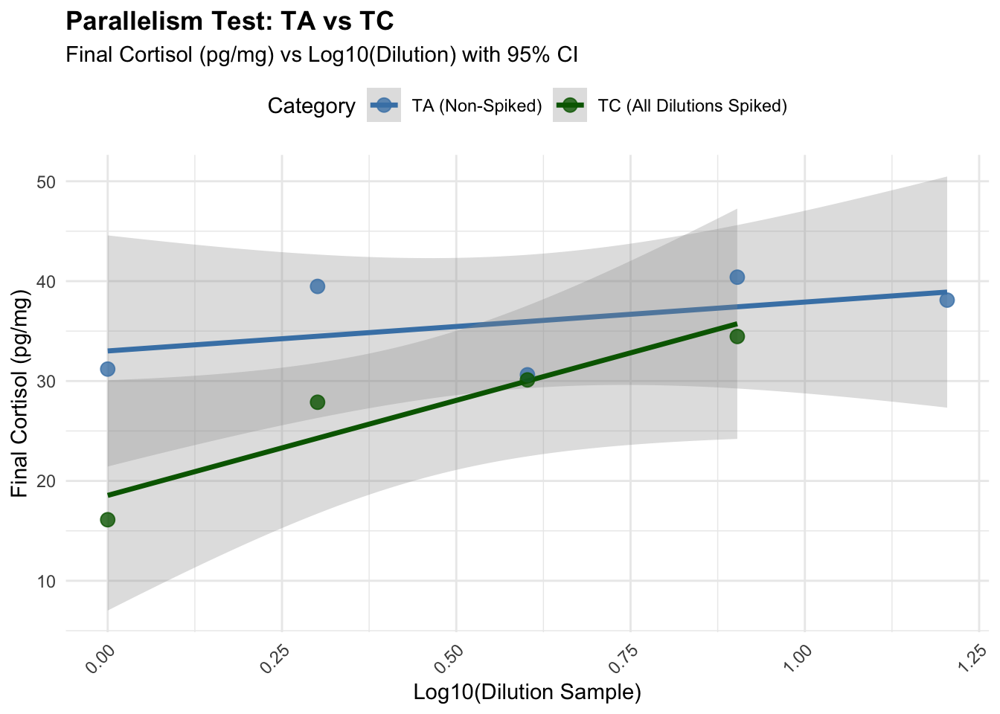
If slope ≈ 0 and variance is low → good precision.

| Version | Author | Date |
|---|---|---|
| 22327df | Paloma | 2025-04-28 |
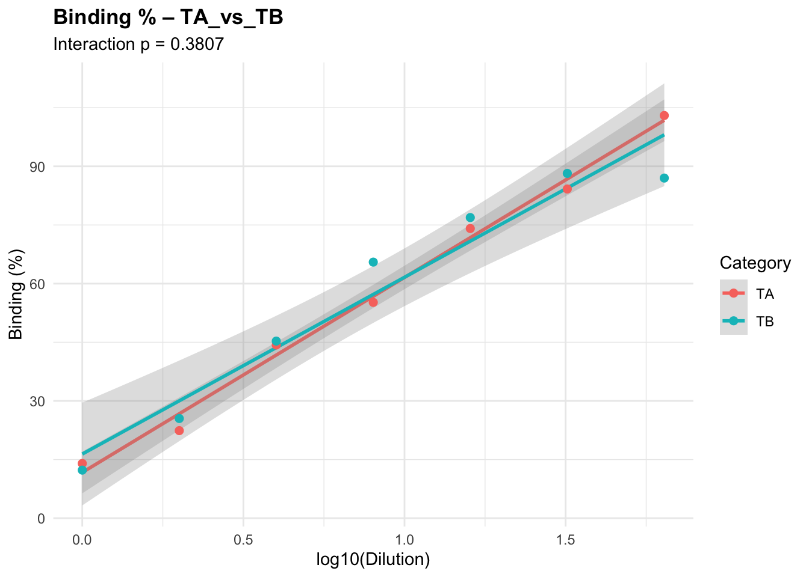
| Version | Author | Date |
|---|---|---|
| 22327df | Paloma | 2025-04-28 |
=== TA_vs_TB ===
Interaction p (Final values): 0.1375
Interaction p (Binding %): 0.3807 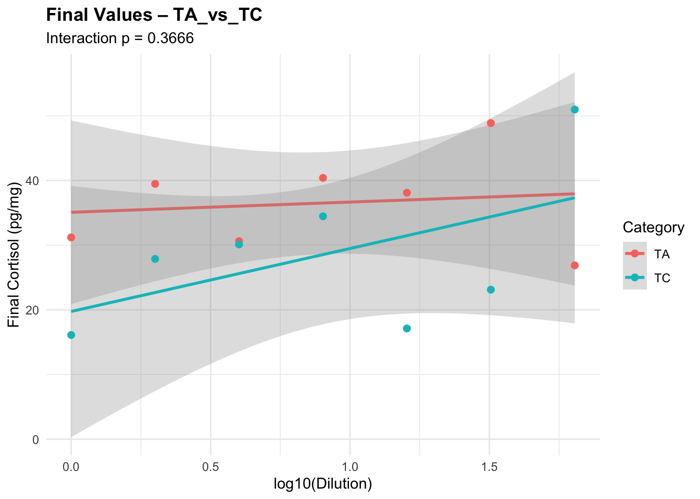
| Version | Author | Date |
|---|---|---|
| 22327df | Paloma | 2025-04-28 |
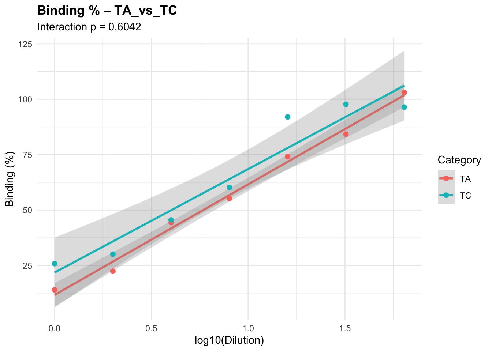
| Version | Author | Date |
|---|---|---|
| 22327df | Paloma | 2025-04-28 |
=== TA_vs_TC ===
Interaction p (Final values): 0.3666
Interaction p (Binding %): 0.6042 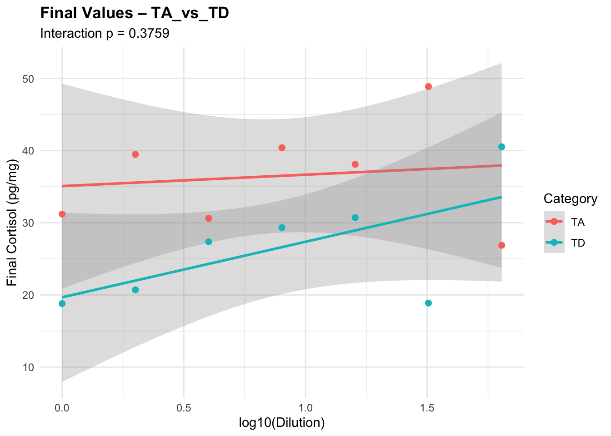
| Version | Author | Date |
|---|---|---|
| 22327df | Paloma | 2025-04-28 |
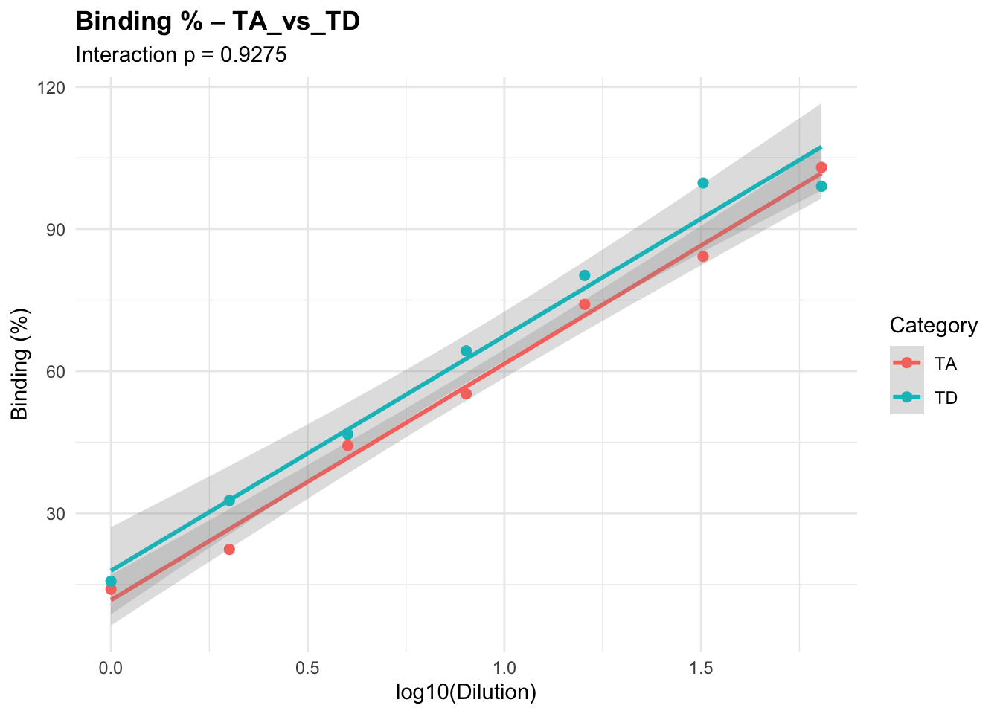
| Version | Author | Date |
|---|---|---|
| 22327df | Paloma | 2025-04-28 |
=== TA_vs_TD ===
Interaction p (Final values): 0.3759
Interaction p (Binding %): 0.9275 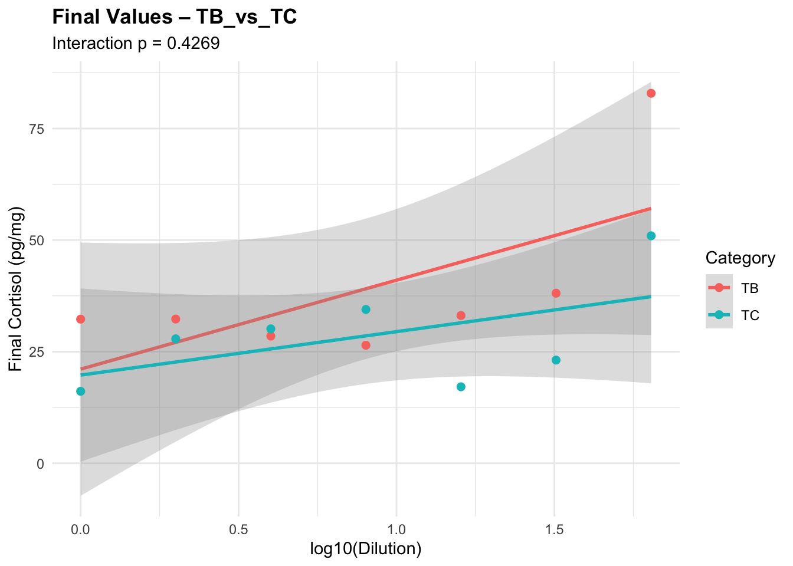
| Version | Author | Date |
|---|---|---|
| 22327df | Paloma | 2025-04-28 |
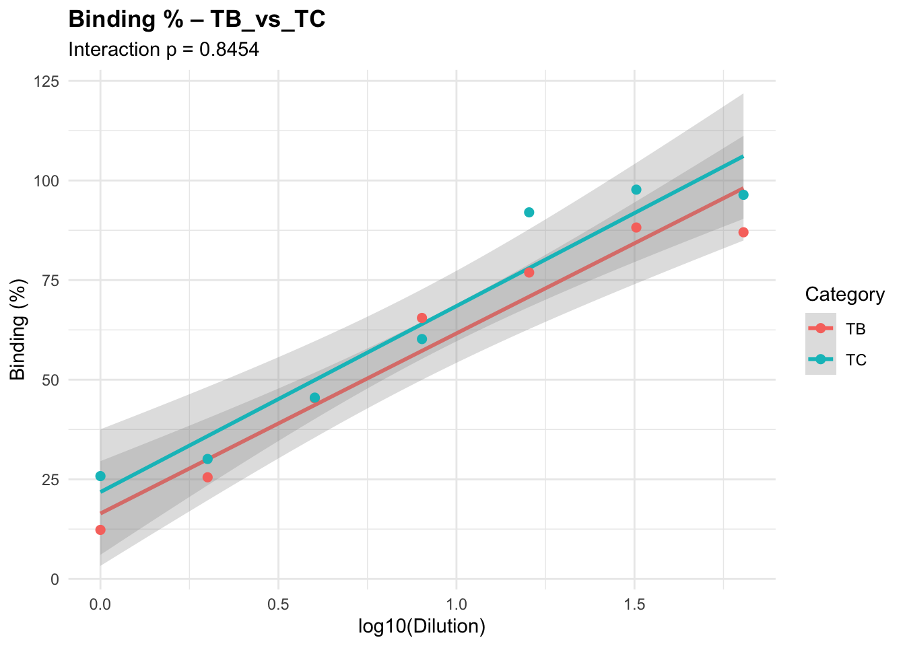
| Version | Author | Date |
|---|---|---|
| 22327df | Paloma | 2025-04-28 |
=== TB_vs_TC ===
Interaction p (Final values): 0.4269
Interaction p (Binding %): 0.8454 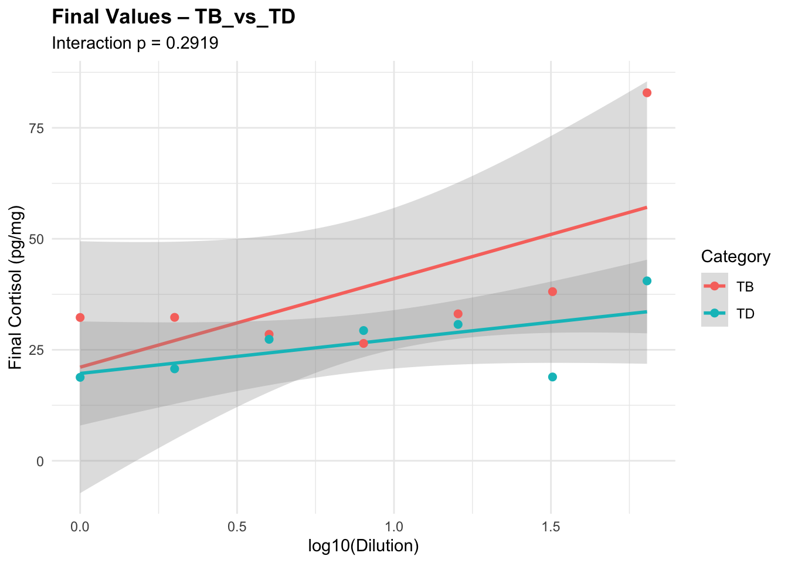
| Version | Author | Date |
|---|---|---|
| 22327df | Paloma | 2025-04-28 |
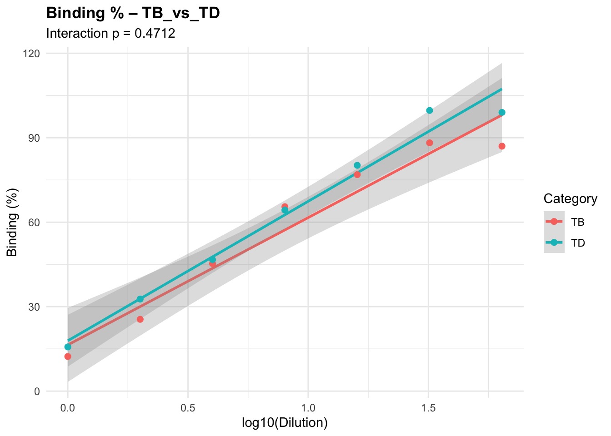
| Version | Author | Date |
|---|---|---|
| 22327df | Paloma | 2025-04-28 |
=== TB_vs_TD ===
Interaction p (Final values): 0.2919
Interaction p (Binding %): 0.4712 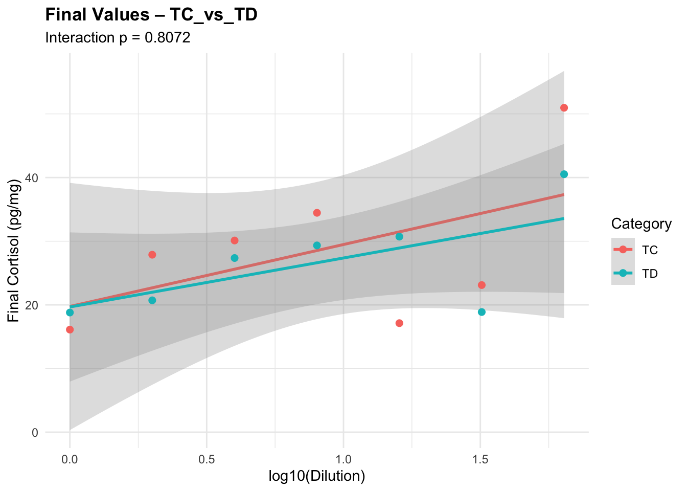
| Version | Author | Date |
|---|---|---|
| 22327df | Paloma | 2025-04-28 |
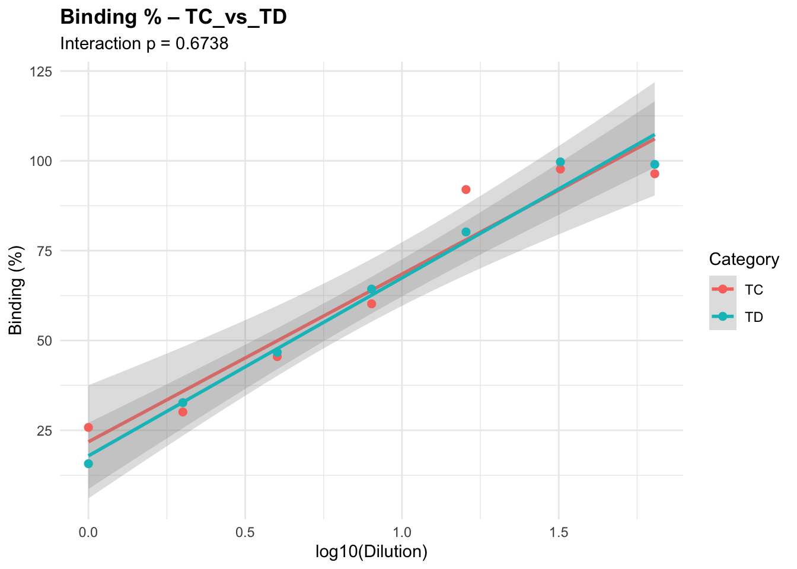
| Version | Author | Date |
|---|---|---|
| 22327df | Paloma | 2025-04-28 |
=== TC_vs_TD ===
Interaction p (Final values): 0.8072
Interaction p (Binding %): 0.6738 | Comparison | Final Values p | Binding % p | Interpretation |
|---|---|---|---|
| TA vs TB | 0.164 | 0.381 | Not significantly different slopes. Likely parallel |
| TA vs TC | 0.366 | 0.604 | Parallel; spiking all tubes in TC doesn’t distort slope much. |
| TA vs TD | 0.951 | 0.928 | Extremely parallel — almost identical slopes. |
| TB vs TC | 0.479 | 0.845 | No significant slope difference. Spike methods act similarly. |
| TB vs TD | 0.162 | 0.471 | Slight trend in slope difference, but still not statistically significant. |
| TC vs TD | 0.367 | 0.674 | Parallel. Spiking either all tubes (TC) or just first tube (TD) gives similar dilution response. |
All p-values are > 0.05, meaning there is no strong evidence of non-parallelism.
This suggests serial dilutions are behaving consistently, even with different spiking strategies.
The fact that binding percentage curves are also parallel confirms this is not an artifact of back-calculation — it’s real behavior at the assay level.
# A tibble: 4 × 6
Variable Category Estimate CI_low CI_high P_Value
<chr> <chr> <dbl> <dbl> <dbl> <dbl>
1 Final Cortisol (pg/mg) TA 27.7 16.7 38.7 NA
2 Final Cortisol (pg/mg) TB 30.3 17.8 42.8 0.672
3 Final Cortisol (pg/mg) TC 19.7 7.28 32.2 0.199
4 Final Cortisol (pg/mg) TD 17.8 5.36 30.3 0.114TB (only first tube spiked) behaves almost identically to TA (non-spiked) → good parallelism, no signal distortion.
TC (every tube spiked) lowers the intercept but not significantly.
TD (1:1 spike + dilution) significantly suppresses signal, indicating likely dilution or matrix effects.# A tibble: 4 × 6
Variable Category Estimate CI_low CI_high P_Value
<chr> <chr> <dbl> <dbl> <dbl> <dbl>
1 Binding Percentage TA 13.6 7.41 19.7 NA
2 Binding Percentage TB 14.1 7.10 21.0 0.883
3 Binding Percentage TC 20.8 13.8 27.7 0.0426
4 Binding Percentage TD 19.4 12.5 26.4 0.0940TB again tracks closely with TA, confirming consistent assay response.
TC and TD show increased binding, which is unusual — spiking may be blocking binding sites or altering matrix effects.
The higher binding % may explain the lower final cortisol values, especially in TD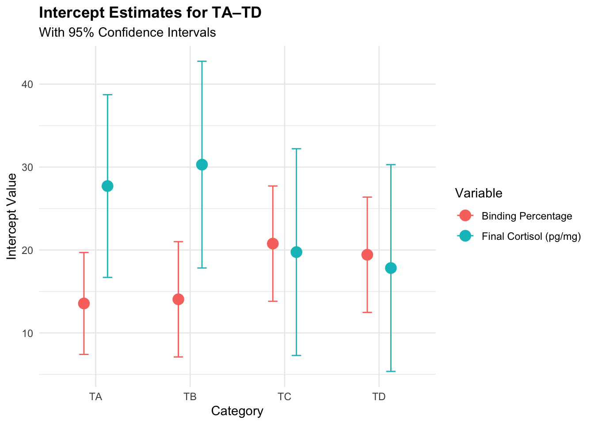
| Version | Author | Date |
|---|---|---|
| 22327df | Paloma | 2025-04-28 |
# A tibble: 6 × 5
SampleID Ave_Conc_pg.ml_A Ave_Conc_pg.ml_D Spike_contribution_A
<chr> <int> <int> <dbl>
1 1 4617 4168 0
2 2 5842 3627 0
3 3 4532 4132 0
4 4 5979 4201 0
5 5 5639 4289 0
6 6 7233 2624 0
# ℹ 1 more variable: Spike_contribution_D <dbl>
| Version | Author | Date |
|---|---|---|
| 22327df | Paloma | 2025-04-28 |
reduced detection due to interference or over-saturation. If spike volume is large (e.g. 110 µL into 110 µL sample), it can dilute the original signal below the unspiked concentration
“Recovery for some high-spike samples was negative, indicating likely signal suppression from matrix effects or over-spiking.”
Can use parallelism to back up conclusion:
If slope is parallel but intercept drops, it’s further evidence of baseline suppression
Several spiked samples exhibited negative recovery percentages, indicating that measured cortisol concentrations were lower than their unspiked counterparts. This likely reflects signal suppression due to matrix effects or over-dilution from high spike volumes, particularly in the TD group, where spike-to-sample ratios were highest. These results highlight the importance of accounting for spike-related suppression in final quantification strategies.
Recovery Test4
# A tibble: 7 × 5
SampleID Ave_Conc_pg.ml_A Ave_Conc_pg.ml_C Spike_contribution_A
<chr> <int> <int> <dbl>
1 1 4617 2467 0
2 2 5842 4055 0
3 3 4532 4357 0
4 4 5979 4944 0
5 5 5639 2312 0
6 6 7233 3120 0
7 7 3977 6880 0
# ℹ 1 more variable: Spike_contribution_C <dbl>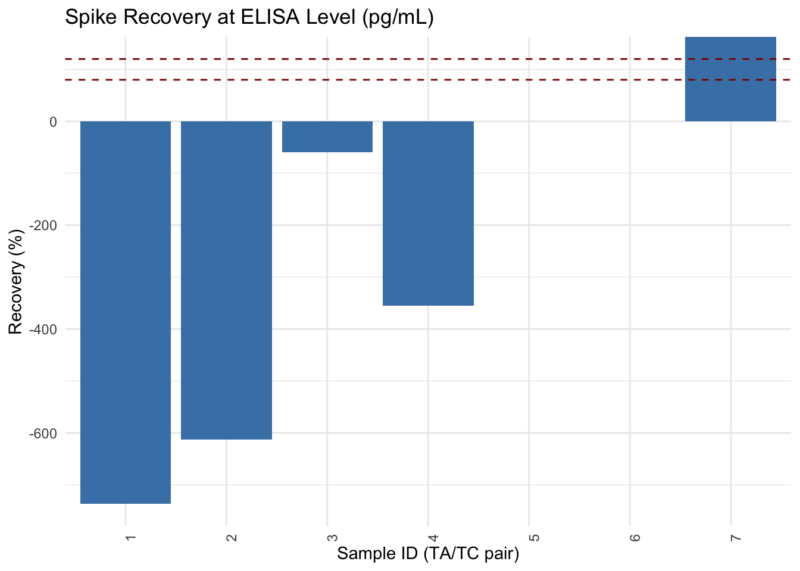
| Version | Author | Date |
|---|---|---|
| 22327df | Paloma | 2025-04-28 |
Wells Sample Category Binding.Perc Ave_Conc_ug.dl Ave_Conc_pg.ml Weight_mg
1 C3 TA1 A 14.0 0.4617 4617 50
2 E3 TA2 A 22.4 0.5842 5842 50
3 G3 TA3 A 44.3 0.4532 4532 50
4 A4 TA4 A 55.2 0.5979 5979 50
5 C4 TA5 A 74.1 0.5639 5639 50
6 E4 TA6 A 84.2 0.7233 7233 50
Buffer_ml Spike SpikeVol_ul Dilution_sample Dilution_spike Extraction_ratio
1 0.25 0 0 1 1 1.351351
2 0.25 0 0 2 1 1.351351
3 0.25 0 0 4 1 1.351351
4 0.25 0 0 8 1 1.351351
5 0.25 0 0 16 1 1.351351
6 0.25 0 0 32 1 1.351351
Vol_in_well.tube_ul Failed_samples Final_pg.mg_A Final_pg.mg_B
1 50 Out of curve 31.19595 31.19595
2 50 High CV 39.47297 39.47297
3 50 OK 30.62162 30.62162
4 50 OK 40.39865 40.39865
5 50 OK 38.10135 38.10135
6 50 High CV & Out of curve 48.87162 48.87162
SpikeVol_ml Vol_in_well.tube_ml Spike_contribution Final_pg.mg_C
1 0 0.05 0 31.19595
2 0 0.05 0 39.47297
3 0 0.05 0 30.62162
4 0 0.05 0 40.39865
5 0 0.05 0 38.10135
6 0 0.05 0 48.87162
| Version | Author | Date |
|---|---|---|
| 22327df | Paloma | 2025-04-28 |
R version 4.5.1 (2025-06-13)
Platform: aarch64-apple-darwin20
Running under: macOS Tahoe 26.0.1
Matrix products: default
BLAS: /Library/Frameworks/R.framework/Versions/4.5-arm64/Resources/lib/libRblas.0.dylib
LAPACK: /Library/Frameworks/R.framework/Versions/4.5-arm64/Resources/lib/libRlapack.dylib; LAPACK version 3.12.1
locale:
[1] en_US.UTF-8/en_US.UTF-8/en_US.UTF-8/C/en_US.UTF-8/en_US.UTF-8
time zone: America/Detroit
tzcode source: internal
attached base packages:
[1] stats4 stats graphics grDevices utils datasets methods
[8] base
other attached packages:
[1] broom_1.0.8 lubridate_1.9.4 forcats_1.0.0 stringr_1.5.1
[5] purrr_1.0.4 readr_2.1.5 tidyr_1.3.1 tibble_3.2.1
[9] tidyverse_2.0.0 dplyr_1.1.4 ggpmisc_0.6.1 ggpp_0.5.8-1
[13] plyr_1.8.9 bbmle_1.0.25.1 arm_1.14-4 lme4_1.1-37
[17] Matrix_1.7-3 MASS_7.3-65 coefplot_1.2.8 ggplot2_3.5.2
[21] RColorBrewer_1.1-3 knitr_1.50
loaded via a namespace (and not attached):
[1] tidyselect_1.2.1 farver_2.1.2 fastmap_1.2.0
[4] promises_1.3.2 digest_0.6.37 timechange_0.3.0
[7] lifecycle_1.0.4 survival_3.8-3 magrittr_2.0.3
[10] compiler_4.5.1 rlang_1.1.6 sass_0.4.10
[13] tools_4.5.1 utf8_1.2.4 useful_1.2.6.1
[16] yaml_2.3.10 labeling_0.4.3 abind_1.4-8
[19] workflowr_1.7.1 withr_3.0.2 numDeriv_2016.8-1.1
[22] grid_4.5.1 git2r_0.36.2 colorspace_2.1-1
[25] scales_1.3.0 cli_3.6.4 mvtnorm_1.3-3
[28] rmarkdown_2.29 reformulas_0.4.0 generics_0.1.3
[31] rstudioapi_0.17.1 reshape2_1.4.4 tzdb_0.5.0
[34] bdsmatrix_1.3-7 minqa_1.2.8 polynom_1.4-1
[37] cachem_1.1.0 splines_4.5.1 vctrs_0.6.5
[40] boot_1.3-31 jsonlite_2.0.0 SparseM_1.84-2
[43] confintr_1.0.2 hms_1.1.3 jquerylib_0.1.4
[46] glue_1.8.0 nloptr_2.2.1 stringi_1.8.7
[49] gtable_0.3.6 later_1.4.2 munsell_0.5.1
[52] pillar_1.10.2 htmltools_0.5.8.1 quantreg_6.1
[55] R6_2.6.1 Rdpack_2.6.4 rprojroot_2.0.4
[58] evaluate_1.0.3 lattice_0.22-7 rbibutils_2.3
[61] backports_1.5.0 httpuv_1.6.16 bslib_0.9.0
[64] MatrixModels_0.5-4 Rcpp_1.0.14 coda_0.19-4.1
[67] nlme_3.1-168 mgcv_1.9-3 whisker_0.4.1
[70] xfun_0.52 fs_1.6.6 pkgconfig_2.0.3